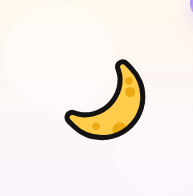
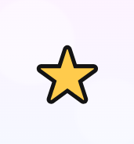
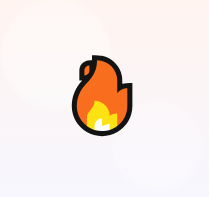

내 마음 그림 조합은 어떤 기운일까요?
그림 2~3개를 선택하면, 조합된 상징 이미지와 더 길어진 해설을 볼 수 있습니다.

조용한 달
혼자만의 정리와 사색의 기운

별빛
희망과 회복을 비추는 기운

불빛
에너지를 깨우는 전진의 기운

구름
변화와 감정 흐름의 상징

바다
깊고 넓은 감정의 에너지

잎새
자라남과 회복의 상징

꽃별
감성과 따뜻함의 기운

해
밝음과 중심의 에너지

고양이
직감과 관찰의 동물

강아지
관계와 애정의 동물

여우
재치와 판단의 동물

사슴
섬세함과 순수의 동물

나비
변화와 개화의 동물

새
자유와 시야의 동물

토끼
민감함과 부드러움의 동물

곰
안정과 보호의 동물
현재 선택: 0개